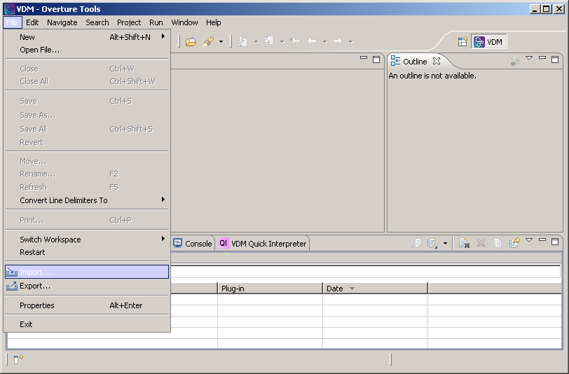
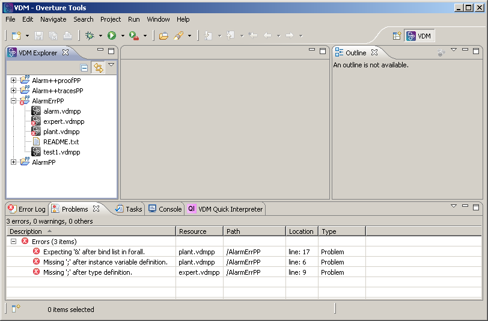

We maintain a large database of illustrative examples, coming from a wide variety of sources and application areas. These examples can be used as inspiration for your own modeling work. We also use these examples to validate changes made to the tools. All examples are included in our continuous build environment such that both model and tool consistency is checked.
VDM examples are available in the three dialects: VDM-SL, VDM++ and VDM-RT. On these pages, you find a detailed overview of each example. However, you can also download the bundle of all examples:
If you have questions on these examples, you can either post a question on the Overture SourceForge Help forum or send us an e-mail. If you have an example to contribute to our collection, we are very happy to hear from you!
Loading the examples in Overture
Step 1 : download any of the example bundles mentioned above
Step 2 : start the Overture tool
Step 3 : go to the File menu and select Import...

Step 4 : click on General and select Existing Projects into Workspace, then click Next

Step 5 :tick Select archive file and click Browse and load the example bundle
Step 6 : select the projects you want to import, then click Finish

Step 7 : the selected projects appear in the Overture ToolVDM Explorer window

Note that the AlarmErrPP example contains errors, this is on purpose! Fixing these errors is part of the tutorial.